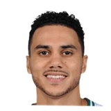

Brad Stevens on Shane Larkin:
“He’s continuously progressing, I guess, butnot going to play tonight, not going to play in either of these games. I still don’t anticipate him being available any time in the near future.”

3 quotes about Shane Larkin from 3 players, coaches and executives, newest first. Each one links to its original source.
Brad Stevens on Shane Larkin:
“He’s continuously progressing, I guess, butnot going to play tonight, not going to play in either of these games. I still don’t anticipate him being available any time in the near future.”
Danny Ainge:
“I’m excited about the playoffs. I really am. Like, Terry Rozier and Shane Larkin, this is their opportunity. And Jaylen [Brown] and Jayson [Tatum] and Marcus Morris and [Al] Horford and [Aron] Baynes and Greg Monroe, I mean, the whole group. These guys are looking forward to playing in the playoffs. And we have the luxury to give them a little bit of rest without taking them completely out of rhythm in these last four games, which is very rare to be able to do heading into the playoffs.”
Jackson:
“Jason Smith has really stepped up his game, and before he got hurt, so had Shane Larkin. Unfortunately, Shane hasn't grown any since the start of the season. Tim Hardaway still shows great potential but has been inconsistent. Jose Calderon expects perfection, and since our operation of the triangle -- while improving -- remains far from perfect, Jose gets frustrated. When that happens, he gets tight and makes mistakes. Overall, though, and more often than not, everybody plays hard.”